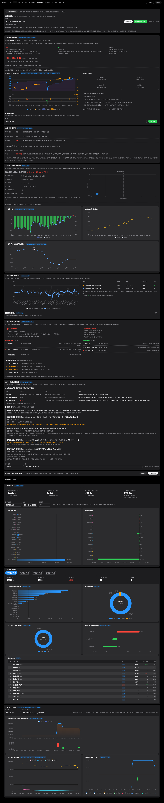

- 问题不在排版，而在分层。13 个区块平铺在一层里，数据（利润 / 仓单 / 虚实盘比 / 研报指标）和结论（计分 / 四象 / 体系票 / 研判）交替出现。首屏虽然能扫到 ① 的「+1 中性」，但那只是三指标计分；完整的体系方向票与综合研判在 3491px（约 3.5 屏）之后，中间要先翻过 ⑤、四象、利润、研报指标、虚实盘比五张卡。
- 同一页有两套 ①②③。三指标系列用 ①~⑥，仓单系列又从 ① 开始，页面上真实存在两个 ①、两个 ②、两个 ③；而且 ⑤ 排在 ② 前面、④ 排在研报指标之后，编号与顺序完全脱钩。
- 结论被重复表达了 4 次。①「+1 中性」与 ⑤「+1 中性 · 3 计分+1 校验」是同一件事；② 的四象定位与 ⑥ 的第一张票「多空逻辑 · 二维四象 · 第三象限」也是同一件事。分层之后可以把它们各自合成一张卡；但别指望重排能压缩高度——拆卡会多出几个卡头，真正省空间的是「A 区默认折叠」（8 块数据收起后，结论直接在首屏）。
01现状体检：页面里到底有什么
下表是按真实 DOM 顺序抓下来的（品种 M，单品种明细视图，1680×1000 视口）。总高 8182px，首屏能看到 ① 卡里的「基本面信号计分 +1 · 中性」；但完整的体系方向票（⑥）在 3491px，仓单三卡从 3817px 一直排到 7000px 之后。
| DOM 序 | 现有标题 | 类型 | 高度 | 现有编号 | 备注 |
|---|
| 0 | ← 返回全品种总览 ｜ 单品种明细 · 6 项 | 导航 | 52 | — | 纯文本，不可点；漏了「研报指标」「板块相关」 |
| 1 | 基本面量化（品种 / 覆盖度 / 刷新） | 控制 | 179 | — | 把 21 个品种全名+交易所+来源铺在标题下 |
| 2 | ① 三指标策略系统 | 结论+数据 | 718 | ① | 内含：计分 + 库存双口径 + 库存周期四象 + 板块相关 |
| 3 | ⑤ 量化信号研判 | 结论 | 101 | ⑤ | 与 ① 的计分重复 |
| 4 | ② 估值 + 驱动 二维四象 | 数据+结论 | 1110 | ② | 内含：四象矩阵 + 基差图 + 期限结构 |
| 5 | ③ 加工 / 进口利润口径 | 数据 | 105 | ③ | — |
| 6 | 研报基本面指标 | 数据 | 80 | 无 | 默认折叠；7 类口径 |
| 7 | ④ 虚实盘比与逼仓识别 | 数据 | 105 | ④ | 排在研报指标之后，编号却在前 |
| 8 | ⑥ 多空逻辑体系研判 | 结论 | 132 | ⑥ | 第一张票就是四象（与 ② 重复） |
| 9 | （仓单控制条：范围 / 单位 / 日期 / 刷新） | 控制 | 140 | — | 页面级筛选器之外的第二套筛选器 |
| 10 | 仓单口径说明（折叠） | 说明 | 47 | — | — |
| 11 | ① 仓单总览 | 数据 | 845 | ①（第二套） | 四所汇总 + 排行 + 饼图 |
| 12 | ② 品种仓单细则 | 数据 | 1394 | ②（第二套） | KPI + 4 张图 + 仓库级明细 |
| 13 | ③ 仓单历史走势 | 数据 | 939 | ③（第二套） | — |

现状全页（品种 M，8182px 压缩显示）。上半部是策略/研判，下半部突然变成仓单三连，中间夹着利润、研报指标、虚实盘比——数据和结论完全交织。
02七条问题（每条都有证据）
问题 1 ｜ 两套编号在同一页打架
三指标系列 ①~⑥ 与仓单系列 ①~③ 各自从 1 开始，用户在同一个滚动流里看到两个「① 三指标策略系统」和「① 仓单总览」，在面包屑里也没法区分。
DOM: ① 三指标策略系统 … ① 仓单总览 / ② 品种仓单细则 / ③ 仓单历史走势
问题 2 ｜ 编号和顺序脱钩
实际滚动顺序是 ①→⑤→②→③→[无编号]→④→⑥。看到 ⑤ 的时候 ② 还没出现，看到 ④ 的时候前面已经出现过 ⑤ 和 ⑥ 的一半语境——编号失去了「阅读顺序」的意义。
DOM order: ① ⑤ ② ③ (研报) ④ ⑥
问题 3 ｜ 数据与结论交错
数据类（利润 ③、研报指标、虚实盘比 ④）夹在结论类（⑤、⑥）之间。想「先看数据判断结论靠不靠谱」的人，必须来回滚。
结论(①) → 结论(⑤) → 数据+结论(②) → 数据(③) → 数据(研报) → 数据(④) → 结论(⑥) → 数据(仓单×3)
问题 4 ｜ 同一结论重复 4 次
① 与 ⑤ 都在讲「库存+基差+期限结构 → 计分」，都给出 +1 · 中性，只是表述不同（① 说「库存+基差 / 反转 / 期限结构；利润为校验项不计分」，⑤ 说「3 计分+1 校验」）；② 的四象定位又原样出现在 ⑥ 的第一张方向票里。四张卡讲两件事。
① : 基本面信号计分 +1 · 中性
⑤ : 计分 +1 · 中性 · 3计分+1校验
② : 第三象限(低估值+驱动向下) 套利/对冲(适合反套)
⑥ : 多空逻辑 | 套利/对冲(适合反套) | … | 二维四象 第三象限
问题 5 ｜ 仓单是「页中页」，却和普通卡平级
仓单自带控制条（品种范围 / 单位 / 数据日期 / 重载）、自带口径说明折叠、自带三张卡，实质是一个独立子模块；但外观上与「③ 加工利润」这种单卡完全同级，没有任何分区标题把它框起来。
DOM: （控制条） → （说明折叠） → ① 仓单总览 → ② 品种仓单细则 → ③ 仓单历史走势
问题 6 ｜ 无编号、无归属
「研报基本面指标」没有任何编号，也没进面包屑；「板块相关性总览」干脆藏在 ① 卡的最底部（滚动 700px 才看到），用户不知道它属于哪一块。
面包屑: 三指标策略 / 估值驱动四象 / 利润 / 虚实盘比 / 多空逻辑体系研判 / 仓单分析
（缺：研报指标、板块相关）
问题 7 ｜ 两套筛选器，作用域没写
页面顶部有「品种」选择（作用于上方全部卡片），仓单区又有自己的「品种范围 / 单位 / 日期」（只作用于仓单三卡）。两个筛选器外观相似、位置相邻，用户改错对象是必然的。
#f-variety（页面级） vs #wt-scope / #wt-product / #wt-date（仓单级）
03内容盘点：13 块 → 12 个内容单元
把页面拆到「一件事」的粒度，再按「这是原始观测，还是推导结论」分类。拆完之后，重复项一眼可见。
| 内容单元 | 现在住在哪 | 性质 | 处理 |
|---|
| 库存：社会库存 × 交易所仓单（双口径分位） | ① 卡内 | 数据 | 拆出 → A1 |
| 库存周期四象限 | ① 卡内 | 数据 | 拆出 → A2 |
| 板块相关性（Pearson 矩阵） | ① 卡底部 | 数据 | 拆出 → A8 |
| 基差率走势 + 期限结构 | ② 卡内 | 数据 | 拆出 → A3 |
| 加工 / 进口利润（多口径分位） | ③ 卡 | 数据 | 平移 → A4 |
| 虚实盘比与逼仓识别 | ④ 卡 | 数据 | 平移 → A5 |
| 仓单总览 / 品种细则 / 历史走势 | 仓单 ①②③ | 数据 | 降级为子块 → A6.1~6.3 |
| 研报披露指标（7 类口径） | 研报基本面指标 | 数据 | 补编号 → A7 |
| 三指标计分（库存 + 基差 + 期限结构，利润为校验） | ① 计分段 + ⑤ | 结论 | 合并 → B1 |
| 估值 × 驱动 四象定位 | ② 结论段 + ⑥ 第一票 | 结论 | 合并 → B2 |
| 体系方向票（多空逻辑 / 期限结构 / 库存周期…） | ⑥ 票据表 | 结论 | 平移 → B3 |
| 综合研判（方向 / 证据 / 校验维度） | ⑤ 结论段 + ⑥ 结论段 | 结论 | 合并 → B4 |
一句话概括这张表
12 个单元里 8 个是数据、4 个是结论；而当前页面把它们拆成 13 张卡、用两套编号混排。分层之后，数据区和结论区各是一段连续滚动，且 结论从第 4 张卡提前到第 1 屏可及。
04目标结构：A 数据底座 / B 信号研判
分区只有两个，按用户使用顺序排列：先看原料（A），再看产出（B）。页头只留「我是谁、数据到哪天、怎么刷新」。
H 页头 · 品种 / 交易所 / 数据截至 / 覆盖率 · [刷新全部] [全池刷新]
│
├─ A · 数据底座 原始观测与计算值，用来核验结论。8 块，可整区折叠。
│ A1 库存：社会库存 × 交易所仓单（双口径） 原 ① 卡内
│ A2 库存周期四象限 原 ① 卡内
│ A3 基差与期限结构 原 ② 卡内
│ A4 加工 / 进口利润口径 原 ③
│ A5 虚实盘比与逼仓识别 原 ④
│ A6 仓单 原 仓单三卡 + 独立控制条，控制条上移到本块标题右
│ A6.1 总览（四所汇总 / 排行） A6.2 品种细则（仓库级） A6.3 历史走势
│ A7 研报披露指标（7 类口径） 原「研报基本面指标」
│ A8 板块相关性 原 ① 卡底部
│
└─ B · 信号与研判 由 A 区推导，供决策。4 块，全部默认展开。
B1 三指标计分 库存 + 基差 + 期限结构；利润为校验、不计分。原 ① 计分 + ⑤
B2 估值 × 驱动 四象定位 原 ② 结论 + ⑥ 第一票
B3 体系方向票 原 ⑥ 票据表
B4 综合研判 方向 / 强度 / 触发 / 失效。原 ⑤ 结论 + ⑥ 结论
为什么是 A/B 而不是 1~11 连续编号
- 用户的两个诉求是「数据放一起、策略放一起」和「统一编号」。字母分区同时解决两件事：看到 A 就知道是原料，看到 B 就知道是结论，编号还天然唯一。
- 连续编号 1~12 也能消掉重号，但看编号看不出层级，滚到「7」时不知道自己在数据段还是结论段。
- 子块用小数点（A6.1）只出现在仓单内部，页面上不再出现第二套 ①②③。
- 如果之后觉得字母碍眼，把
A1→1、B1→9 是一次纯文案替换，不影响结构。
05新旧对照：一张表看完所有位移
| 现在 | DOM 序 | 改造后 | 动作 | 风险 |
|---|
| ① 三指标策略系统（计分部分） | 2 | B1 三指标计分 | 拆出并合 ⑤ | 中：计分口径要确认「以谁为准」 |
| ① 卡内 · 库存双口径 | 2 | A1 | 拆出 | 低：纯搬移，图表容器 id 不变 |
| ① 卡内 · 库存周期四象 | 2 | A2 | 拆出 | 低 |
| ① 卡内 · 板块相关性 | 2 | A8 | 拆出 | 低 |
| ② 估值 + 驱动 二维四象（图与矩阵） | 4 | A3 基差与期限结构 + B2 | 拆成数据 / 结论两半 | 中：一张卡拆两张，注意 h3 唯一 |
| ③ 加工 / 进口利润口径 | 5 | A4 | 平移 | 极低：连 id 一起搬 |
| ④ 虚实盘比与逼仓识别 | 7 | A5 | 平移 + 前移 | 极低 |
| 研报基本面指标（无编号） | 6 | A7 | 平移 + 补编号 | 极低 |
| 仓单控制条 | 9 | A6 区块头右侧 | 并入块头 | 中：注意 .page-tools 每 tab 只能 1 个 |
| ① 仓单总览 | 11 | A6.1 | 改编号 + 降级 | 低 |
| ② 品种仓单细则 | 12 | A6.2 | 改编号 + 降级 | 低 |
| ③ 仓单历史走势 | 13 | A6.3 | 改编号 + 降级 | 低 |
| ⑤ 量化信号研判 | 3 | B1 + B4 | 并入两处 | 中：逐维读数并 B1，结论并 B4 |
| ⑥ 多空逻辑体系研判 | 8 | B2（四象票）+ B3（票据表）+ B4（结论） | 拆成三处 | 中高：需确认票表去重后的完整性 |
06分三期落地，每期都能单独上线
P0
只动顺序、标题与编号（零逻辑改动）
- 加两根分区标题条：A · 数据底座 / B · 信号与研判（纯 DOM，无新接口）
- 把 13 块按 A1~A8 / B1~B4 重排，改 h3 文字与编号
- 仓单三卡改 A6.1/6.2/6.3，控制条移进 A6 块头
- 面包屑 6 项换成 A1–A8 / B1–B4 锚点（可点击跳转）
- 验收：页面高度不增、所有图表仍渲染、每张卡 h3 唯一、无第二套 ①②③
P1
拆卡（把「数据 + 结论」混住的卡一分为二）
- ① → B1（计分）+ A1（库存）+ A2（周期）+ A8（板块相关）
- ② → A3（基差图 / 期限结构）+ B2（四象定位）
- 验收：拆出来的每个容器 id 保持原样（
chart-f-inv、chart-f-basis 等），只换父节点；E2E 断言图表 canvas 宽度与容器一致
P2
合并重复结论（需要先定口径）
- B1：① 计分 + ⑤ 逐维读数 → 一张表（维度 / 读数 / 是否计分 / 依据）
- B2：② 四象定位 + ⑥ 的四象票 → 一条，只保留一处
- B3：⑥ 余下票据（期限结构 / 库存周期 / 利润）
- B4：方向 / 强度 / 触发 / 失效 四行结构（现只有一句「中性」）
- 验收：删掉的重复文案在页面上完全消失（按文本断言，不按 DOM 计数）
07预期效果
现在
页面总高
8182px（M 品种）
看到第一条结论
首屏有 ① 的「+1 中性」，但方向票与研判在 3491px（约 3.5 屏）
编号系统
2 套，共存 2 个 ①
结论重复
4 处（①⑤ / ②⑥）
仓单区
3 张平级卡，无分区，高度 3178px
面包屑
纯文本 6 项，不可点，漏 2 块
改造后（P2 完成）
页面总高（全展开）
≈8200px，与现在基本持平 —— 拆卡会多出 4 个卡头（≈300px），去重省回 ≈250px，净变化接近 0。不要指望「重排」能压缩高度。
页面总高（A 区折叠）
≈1200px —— 数据区默认收起时，B 区结论直接在首屏
看到第一条结论
分区导航一键跳 B 区（吸顶 A/B 切换），或折叠 A 区后 1 屏内
编号系统
1 套：A1–A8 / B1–B4 / A6.1–6.3
结论重复
0 处
仓单区
收进 A6，块头带自己的筛选器
面包屑
可点击锚点 12 项，覆盖全部块
08风险与护栏（沿用项目既有铁律）
- h3 唯一：合并卡只能有一个
<h3>（_secTitleOf 取第一个），卡内子标题用 div。
- div 闭合：拆卡时每拆一次都要核对闭合配对，漏删外层
</div> 会把后续卡挤出 tab，且不报错。
- 索引版本：卡片数量与顺序变化后
_SEC_IDX_VER 必须 +1；若有 tab 名变动，_SEC_OPEN_BY_TAB 的键要跟着改。
- page-tools 唯一：每个 tab 只能有 1 个
.page-tools，仓单控制条并入块头时要去掉该 class、保留 id。
- 删模块要真删：
_secScan 按 DOM 扫描，只藏不删会留僵尸索引项。
- 图表容器别重建：搬节点保持原 id，搬完补一次
_resizeAllCharts()（半宽改造时踩过：隐藏视图里初始化的图会停在 100px）。
- 空串有语义的下拉不许补默认值：仓单的 scope/product 若有
option[value=""]，搬动时不能顺手赋默认值。
09这次不做的事
- 不合并数据口径（社会库存 vs 交易所仓单仍是双口径并列，不强行合成一个分位）。
- 不删任何计算逻辑与图表，只调位置与标题。
- 不改总览页（全品种截面）的列——它另有规划：给 19 列加分组表头（价格与基差 / 库存与仓单 / 虚实与利润 / 信号与结论）。
- 不动后端接口与数据源。
下一步：先看效果图 fund-ia-preview-2026-10-21.html（可切换「现状 / 新结构」对照），确认编号方案后再开工 P0。